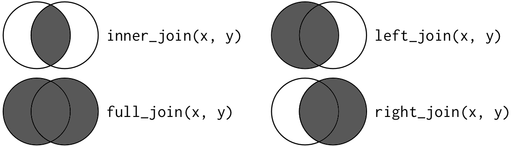
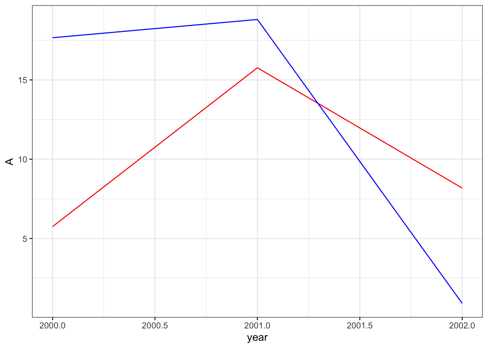
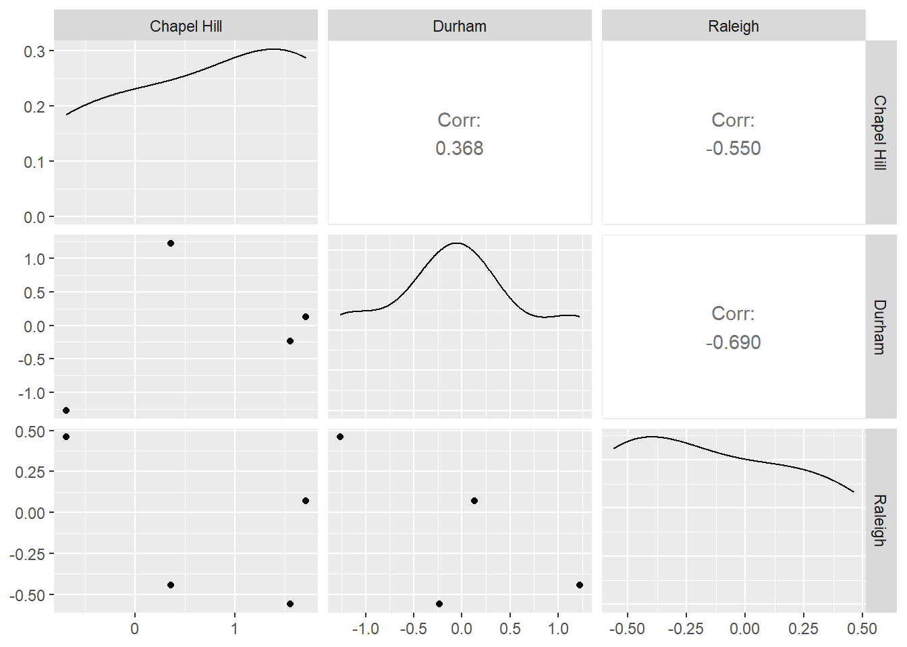
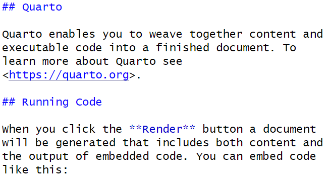

library(tidyverse)beginR: Joining, Reshaping & Reproducible Reports
Data and other downloads
Data derived from Brazilian E-Commerce Public Dataset by Olist provided on Kaggle.com under a CC BY-NC-SA 4.0 license.
Cleaned data courtesy of the Tidy Tuesday project
Today
This workshop covers topics from:
- Joining / Merging datasets
bind_rowsandbind_colsinner_join- “Outer Joins” -
full_join,left_join,right_join
- Reshaping data
pivot_longerpivot_wider
- Review of Previous Topics
- Starting a New Project
- Loading the tidyverse
- Importing Data
- Graphics using ggplot
- Data transformations
- Summarizing Data
- Data Transformations
- Reproducible Reports using Quarto
Motivation: Joining and Reshaping with tidyr
In most of our lessons so far, we’ve typically focused on a single dataset. This week, we’ll cover different methods for combining multiple datasets and transforming the shape of our data.
When using data that includes similar observational units collected by different sources, we will often find ourselves with multiple datasets that need to be combined before we can begin analysis. For example, if we wanted to gather various pieces of information for all of the countries in the world, we’d need to merge or join multiple datasets coming from the UN, the World Bank, the World Health Organization, etc. Or, we may simply need to add observations to an existing dataset (e.g. if we have multiple datasets coming from the World Bank, but each dataset only covers a single year.)
In other cases, we might need to reshape data we already have to make it more appropriate for other software, for analysis, or easier to use within R. If you’re planning to export data from R to another software package, you may need a particular format. For example, mapping software like ArcGIS needs each row of a dataset to represent a geographic location.
Merging / Joining Dataframes
Appending
Sometimes we’ll have two datasets with similar columns that we need to combine. Essentially, we are stacking the rows of those datasets on top of each other. We can combine rows in dplyr with bind_rows:
Dataset 1
a0 <- data.frame("StudentID"=c(1,2),
"GPA_change"=rnorm(2,0,1))
print(a0) StudentID GPA_change
1 1 0.6692377
2 2 1.3409747Dataset 2
a1 <- data.frame("StudentID"=c(3,4),
"GPA_change"=rnorm(2,0,1),
"Semester"=c("Spring","Fall"))
print(a1) StudentID GPA_change Semester
1 3 -0.4680774 Spring
2 4 -0.3713489 FallDatasets combined
bind_rows(a0,a1) StudentID GPA_change Semester
1 1 0.6692377 <NA>
2 2 1.3409747 <NA>
3 3 -0.4680774 Spring
4 4 -0.3713489 FallWhen we refer to merging or joining, we usually do not mean appending or adding observations to a dataset in this way. Instead, joining usuallly intends to add columns or variables to our dataframe. R does have a bind_cols function, but in the context below, using bind_cols is unhelpful and results in mismatched records.
b0 <- data.frame("name"=c("Marcos","Crystal"),
"year"=c(1993,1996))
b1 <- data.frame("name"=c("Crystal","Marcos"),
"project_num"=c(6,3))
bind_cols(b0,b1)New names:
• `name` -> `name...1`
• `name` -> `name...3` name...1 year name...3 project_num
1 Marcos 1993 Crystal 6
2 Crystal 1996 Marcos 3Instead, we want to add columns while making sure certain identifying variables, often called keys (e.g. name and name1 above) line up correctly. That way, each row represents information about a single observational unit.
Merging
Keys
To properly line up observations between two datasets, we need a common variable (or group of variables) that uniquely identifies an observation in at least one of the datasets, and identifies it in the same way across both datasets. This variable is usually called a “key”. In our example above, b0 and b1 have the key “name”.
print(b0) name year
1 Marcos 1993
2 Crystal 1996print(b1) name project_num
1 Crystal 6
2 Marcos 3Once we have matching key variable(s) in our datasets, we can join our datasets into consistent observations. There are two major categories of joins - “Inner Joins” and “Outer Joins”.
Types of Joins
We need several different types of joins to facillitate the different ways datasets are organized.
| Join Type | Want to keep | Function |
|---|---|---|
| Inner Join | Only the rows in both datasets | inner_join() |
| Full (Outer) Join | All of the rows | full_join() |
| Left (Outer) Join | All of the rows in the first (left) dataset, only the matches from the second (right) dataset | left_join() |
| Right (Outer) Join | All of the rows in the second (left) dataset, only the matches from the first (right) dataset | right_join() |
The join types can be represented as Venn Diagrams. The lighter parts of the circles represent unmatched records we are leaving out of the join, while the darker parts represent both matched and unmached records we are keeping in the join.

Take a look at these two datasets:
b0 <- data.frame("name"=c("Marcos","Crystal","Devin","Lilly"),
"year"=c(1993,1996,1985,2001))
b1 <- data.frame("person"=c("Marcos","Crystal","Devin","Tamera"),
"project_num"=c(6,3,9,8))print(b0) name year
1 Marcos 1993
2 Crystal 1996
3 Devin 1985
4 Lilly 2001print(b1) person project_num
1 Marcos 6
2 Crystal 3
3 Devin 9
4 Tamera 8Now, let’s merge them using each of the different join types.
Inner Join
inner_join
inner_join(b0,b1,by=c("name"="person")) name year project_num
1 Marcos 1993 6
2 Crystal 1996 3
3 Devin 1985 9Outer Joins
full_join
full_join(b0,b1,by=c("name"="person")) name year project_num
1 Marcos 1993 6
2 Crystal 1996 3
3 Devin 1985 9
4 Lilly 2001 NA
5 Tamera NA 8left_join
left_join(b0,b1,by=c("name"="person")) name year project_num
1 Marcos 1993 6
2 Crystal 1996 3
3 Devin 1985 9
4 Lilly 2001 NAright_join
right_join(b0,b1,by=c("name"="person")) name year project_num
1 Marcos 1993 6
2 Crystal 1996 3
3 Devin 1985 9
4 Tamera NA 8Note: All of these join functions come from the dplyr package, so we can use them with pipes ( %>% )
Extensions
Multiple Keys
In some cases, we may need multiple keys to uniquely identify an observation. For example, our datasets below have two different observations for each person, so we need to join them by both name and year.
multi0 <- data.frame("name"=c("Tamera","Zakir","Zakir","Tamera"),
"year"=c(1990,1990,1991,1991),
"state"=c("NC","VA","VA","NY"))
multi1 <- data.frame("person"=c("Tamera","Zakir","Zakir","Tamera"),
"year"=c(1990,1990,1991,1991),
"project_num"=c(6,3,9,8))
multijoined <- inner_join(multi0,multi1,
by=c("name"="person","year"="year"))
multijoined name year state project_num
1 Tamera 1990 NC 6
2 Zakir 1990 VA 3
3 Zakir 1991 VA 9
4 Tamera 1991 NY 8Many-to-one and One-to-many Joins
If we only specify enough key variables to uniquely identify observations in one dataset and not the other, each unique value from the first dataset will be joined to each instance of that value in the other dataset.
statedata <- data.frame("state"=c("NC","VA","NY"),
"region"=c("Southeast","Southeast","Northeast"))
inner_join(statedata,multijoined,by=c("state"="state")) state region name year project_num
1 NC Southeast Tamera 1990 6
2 VA Southeast Zakir 1990 3
3 VA Southeast Zakir 1991 9
4 NY Northeast Tamera 1991 8Note: We can equivalently omit by=c("state"="state") since the key variables have the same name here.
Reshaping with tidyr
Once we have a single dataset, we may still need to change its shape. When we talk about the shape of a dataset, we are often referring to whether it is wide or long.
Wide dataset - typically includes more columns and fewer rows with a single row for each observation
Long dataset - typically includes fewer columns and more rows with multiple rows for each observation
The many functions used in R for changing a datasets’ shape have varied over the years along with the terminology (e.g. “reshape”, “melt”, “cast”, “tidy”, “gather”, “spread”, “pivot”, etc.) We will now be working with the new reshaping functions recommended by tidyverse, pivot_longer() and pivot_wider().
Hadley Wickham’s Tidy Data provides more discussion of what “Tidy Data” entails and why it’s useful in data analysis.
Use Case: Making ggplot easier
Why reshape when we have perfectly good data? Sometimes R’s own functions are more convenient with reshaped data. Consider the dataset below in which we’ve generated random numbers for columns A and B.
set.seed(123)
df0 <- data.frame(year=c(2000,2001,2002),
A=runif(3,0,20),
B=runif(3,0,20))
print(df0) year A B
1 2000 5.751550 17.66035
2 2001 15.766103 18.80935
3 2002 8.179538 0.91113Now we want to create a line plot in which each column has its own line. Because our dataset is wide, we’ll need to add each line to the plot separately and individually.
ggplot(data=df0,aes(x=year)) +
geom_line(aes(y=A),color="red") +
geom_line(aes(y=B),color="blue") +
theme_bw()
However, if we were using a long dataset, we could create the plot with less code. Note how our dataset below has a single column for categories A and B.
df1 <- data.frame(year=c(df0$year,df0$year),
category=c("A","A","A","B","B","B"),
value=c(df0$A,df0$B))
print(df1) year category value
1 2000 A 5.751550
2 2001 A 15.766103
3 2002 A 8.179538
4 2000 B 17.660348
5 2001 B 18.809346
6 2002 B 0.911130And for our plot, we only need to add a single geom_line while using the category column for our color aesthetic.
ggplot(data=df1,aes(x=year,y=value,color=category))+
geom_line()+
theme_bw()
This may not seem like much of a big deal for this particular plot, but what if we were trying to plot hundreds of lines?
We can move back and forth between the long shape used by df1 and the wide shape used by df0 with tidyr’s pivot_longer and pivot_wider functions.
pivot_longer
First, let’s create a small example dataset with four columns of randomly generated numbers.
set.seed(123)
raw <- data.frame(
City=c("Raleigh","Durham","Chapel Hill"),
x2000=rnorm(3,0,1),
x2001=rnorm(3,0,1),
x2002=rnorm(3,0,1),
x2003=rnorm(3,0,1)
)
print(raw) City x2000 x2001 x2002 x2003
1 Raleigh -0.5604756 0.07050839 0.4609162 -0.4456620
2 Durham -0.2301775 0.12928774 -1.2650612 1.2240818
3 Chapel Hill 1.5587083 1.71506499 -0.6868529 0.3598138x2000 through x2003 represent something measured in 2000 to 2003, since R data.frames cannot have labels that start with numbers.
In the dataset above, we have information stored in separate columns for each year, but it might be more useful to store the year number itself in its own column. We can use the pivot_longer function to do this.
pivot_longer takes four main arguments:
data: this must be a data frame.
cols: a list of column names that we want to pivot into a single column.
names_to: the name of the new column that will contain the names of the columns we are pivoting.
values_to: the name of another new column that will contain values of the columns we are pivoting.
We can also use various other arguments with pivot_longer that allow us to do a number of handy things. For example, the names_prefix argument lets us remove the “x” in front of our year names. Run ?pivot_longer in your console for a full list of arguments that can be used.
longpivot <- raw %>%
pivot_longer(cols = starts_with("x"),
names_to = "Year",
values_to = "Value",
names_prefix = "x")
print(longpivot)# A tibble: 12 × 3
City Year Value
<chr> <chr> <dbl>
1 Raleigh 2000 -0.560
2 Raleigh 2001 0.0705
3 Raleigh 2002 0.461
4 Raleigh 2003 -0.446
5 Durham 2000 -0.230
6 Durham 2001 0.129
7 Durham 2002 -1.27
8 Durham 2003 1.22
9 Chapel Hill 2000 1.56
10 Chapel Hill 2001 1.72
11 Chapel Hill 2002 -0.687
12 Chapel Hill 2003 0.360 It’s often useful to think about how transformations like pivot_longer change the effective observational unit of the dataset. This dataset started with city-level observations in which each row was represented by a unique city name. The transformed data frame longpivot now observes one city in a given year in each row, so we now have multiple rows for the same city.
pivot_wider
We can reverse our previous transformation with pivot_wider. This time, we’ll create a separate column for each city.
pivot_wider takes three essential arguments:
data
names_from: the column whose values we’ll use to create new column names.
values_from: another column whose values we’ll use to fill the new columns.
widepivot <- longpivot %>%
pivot_wider(names_from = City, values_from = Value)
print(widepivot)# A tibble: 4 × 4
Year Raleigh Durham `Chapel Hill`
<chr> <dbl> <dbl> <dbl>
1 2000 -0.560 -0.230 1.56
2 2001 0.0705 0.129 1.72
3 2002 0.461 -1.27 -0.687
4 2003 -0.446 1.22 0.360Why would we want each city to have its own column? Well, it might be a useful step to determine which cities are most closely correlated as part of an Exploratory Data Analysis process. For example, we can now easily use this dataset with ggally to create a plot matrix.
library(GGally)
widepivot %>%
select("Chapel Hill","Durham","Raleigh") %>%
ggpairs()
Motivation: Reproducible Reports
Quarto provides a straightforward way to create reports that combine code and the output from that code with text commentary. This allows for the creation of automated, reproducible reports. Quarto can knit together your analysis results with text and output it directly into HTML, PDF, or Word documents. In fact, we have been using Quarto to generate the webpage for all of our R Open Labs workshops!
Note: R Markdown
Quarto is very similar to an older tool, R Markdown, that these workshops were originally created in. Quarto and R Markdown syntax and behind the scenes functionality are similar, but Quarto is designed to be more compatible with other languages like Python and Julia. In most cases, you can convert old R Markdown .Rmd documents into Quarto documents with no changes.
Quarto Structure
Quarto has three components.
- An (optional) header in a language called YAML. This allows you to specify the type of output file and configure other options.
- R code chunks wrapped by
``` - Text mixed with simple formatting markup.
To create a new Quarto document (.qmd), select File -> New File -> Quarto Document.
You will have the option to select the output: we’ll use the default HTML for this workshop. Give the document a title and enter your name as author: this will create the header for you at the top of your new .html page! RStudio will create a new Quarto document filled with examples of code chunks and text.
Header
---
title: "beginR: Joining, Reshaping & Reproducible Reports"
author:
name: University of North Carolina at Chapel Hill
execute:
echo: true
format:
html:
theme: spacelab
toc: true
toc-location: left
page-layout: article
---At the top of the page is the optional Yet Another Markup Language (YAML) header. This header is a powerful way to edit the formatting of your report (e.g. figure dimensions, presence of a table of contents, identifying the location of a bibliography file).
Code Chunks
```{r}
#| label: setup
#| warning: false
library(tidyverse)
```R code chunks are surrounded by ```. Inside the curly braces, it specifies that this code chunk will use R.
#| precedes options for this code chunk. In this case:
#| label: setupnames this chunk “setup”. (Names are optional)#| warning: falsetells Quarto to hide any warnings generated by our code in the final HTML document.
Finally the code library(tidyverse) is executed as usual. When creating a document, you can use the buttons at the top right of the code chunk to run all code before and run the code in this block respectively.
Use CTRL+ALT+i (PC) or CMD+OPTION+i (Mac) to insert R code blocks.
Formatted Text
## Quarto
Quarto enables you to weave together content and executable code into a finished document. To learn more about Quarto see <https://quarto.org>.
## Running Code
When you click the **Render** button a document will be generated that includes both content and the output of embedded code. You can embed code like this:
This is plain text with simple formatting added. The ## tells Quarto that “Quarto” and “Running Code are section headers. The ** around”Render” tells Quarto to make that word bold.
The Posit team has helpfully condensed these code chunk and text formatting options into a cheatsheet.
You can get pretty far with options in the Quarto cheatsheet, but Quarto is a very powerful, flexible language that we do not have time to fully cover. More detailed references are available here: https://quarto.org/docs/authoring/markdown-basics.html
Visual Editor
R Studio provides a visual editor for Quarto documents. This can be accessed by toggling between the “Source” and “Visual” options in the top left corner of your Qmd script editor pane.
Once activated, this interface is similar to a word processing software like Microsoft Word - shortcuts for bolding, italics, etc. are usually the same and there are icons and drop down menus available for lists, bullets, links, and more.
You can still use CTRL+ALT+i (PC) or CMD+OPTION+i (Mac) to insert R code blocks, or use the Insert>Code Chunk>R menu in the visual editor.
Read more about the visual editor here:
https://quarto.org/docs/visual-editor/
Generating the HTML document
Click the Render button, and R Studio will generate an HTML report based on your document.
Let’s try creating an Quarto document to explore the US cheese consumption data and review what we learned in weeks 1-3.
###Data Import
```{r}
consumption <- read_csv("data/clean_cheese.csv")
```
### Useful functions for exploring dataframes
Include one of the following in your document. We've used `eval = FALSE` here to prevent this code chunk from running!
```{r}
#| label: misc
#| eval: FALSE
head(consumption)
tail(consumption)
summary(consumption)
```
### Tables and `knitr::kable`
By default, Quarto will display tables the way they appear in the R console. We can use `knitr::kable function` to get cleaner tables.
```{r}
#| label: kable
knitr::kable(head(consumption), caption = "The first six rows of the cheese consumption data")
```
### Adding a new variable
We've covered two ways to add a new variable to a dataframe.
**Note:** R allows non-standard variable names that include spaces, parentheses, and other special characters. The way to refer to variable names that contain wonky symbols is to use the backtick symbol `` ` ``, found at the top left of your keyboard with the tilde `~`.
The base R way covered in lesson 1 using the `$` operator and `with()` function
```{r}
#| label: ratio1
#| error: TRUE
#Base R way, covered in lesson 1
consumption$amer_ital_ratio <- with(consumption, `Total American Cheese` / `Total Italian Cheese`)
```
Oops. Better check the variable names.
```{r}
#| label: ratio2
consumption$amer_ital_ratio1 <- with(consumption, `Total American Chese` / `Total Italian Cheese`)
```
The tidyverse way covered in lesson 3 using the `mutate()` function
```{r}
#| label: ratio3
#Tidyverse way, covered in lesson 3
consumption <- mutate(consumption, amer_ital_ratio2 = `Total American Chese` / `Total Italian Cheese`)
```
### Selecting Columns
```{r}
#| label: select
consumption <- select(consumption, Year, Cheddar, Mozzarella, `Cream and Neufchatel`)
```
### Renaming Columns
```{r}
#| label: rename
consumption <- rename(consumption, Cream_and_Neufchatel = `Cream and Neufchatel`)
```
### Plotting
```{r}
#| label: plot1
#| fig.width: 8
#| fig.height: 5
ggplot(consumption, aes(x = Year)) +
geom_point(aes(y = Cheddar, col = "Cheddar")) +
geom_point(aes(y = Mozzarella, col = "Mozzarella")) +
geom_point(aes(y = Cream_and_Neufchatel, col = "Cream and Neufchatel")) +
ylab("Consumption in Pounds Per Person")
```Bibliography
Quarto also provides a nifty way to incorporate a bibliography and references. We’ll haven an example of this in the exercises, but here’s a brief summary of the steps required to use a BibTex bibliography.
- Create a plain-text .bib file in the same directory as your .qmd document.
- Fill that .bib file with BibTex citations. Many academic databases or the Citation Machine can generate the BibTex citations for you.
- Make sure each citation has a unique citation-key, the first entry
- Add a bibliography field to the YAML header that tells Quarto the name of your bibliography file, for example
bibliography: references.bib - Add citations throughout the document using square brackets.
Exercises
Merge and Reshape
All of today’s exercises involve the datasets included in brazilian-commerce-subset.zip.
Read olist_public_dataset_v2.csv into R. Explore the dataset. If necessary, refer to the metadata provided here.
Read product_category_name_translation.csv into R. Merge this dataframe into olist_public_dataset_v2.csv using
product_category_nameas the key variable.Let’s explore which products are most frequently purchased together:
Use
group_byandsummarizeto find the totalorder_items_qtyfor eachproduct_category_name_englishin eachcustomer state. ReviewUse
pivot_widerto create a new dataframe with a row for eachcustomer_stateand a column for eachproduct_category_name_english. Name this dataframeproducts.Run the two lines of code below (make sure your dataframe from step 4 is called
products!)products <- ungroup(products) #remove grouping products[is.na(products)] <- 0 #replace missing data with zeroesUse
ggpairsor other Exploratory Data Analysis techniques to look for relationships between purchases ofsmall_appliances,consoles_games,air_conditioning, andconstruction_tools_safety. (Remember to runlibrary(GGally)before usingggpairs).Repeat problems 3-6 with
order_products_value(i.e. the amount spent vs the quantity purchased). Do you see different patterns? Explore other product categories.Use
pivot_longerand thenpivot_widerto convert yourproductsdataframe to one where each row is a differentproduct_category_name_englishand each column represents a differentcustomer_state.Choose 5 states. Which of these states have the most similar patterns of spending (as measured by correlation)?
Quarto
Download the cheese RStudio Project file and extract the R Project contained within. Then, render the cheeseConsumption.qmd report. It should generate an HTML report for you.
In the cheeseConsumption.qmd file, find the code chunk named setup. change
#| echo: FALSEto#| echo: TRUE. Try knitting the document again. What changed? Did this affect the whole document?In the cheeseConsumption.qmd file, find the code chunk named import. change
#| message: FALSEto#| message: TRUE. Try knitting the document again. What changed? Did this affect the whole document?Create another Quarto document analyzing cheese production data contained in the state_milk_productions.csv file. You can use the data dictionary found here to make sense of the different variables. Hint: you’ll need to use the group-by %>% summarize idiom we learned in Week 3 to sum up all the state level data within each year. You’ll probably want to feed the output from that group-by %>% summarize step into knitr::kable() to get a prettier table for your report.
Once you have created an Quarto report analyzing cheese production, send the entire R Project to a friend (or us!) and ask them to knit that .qmd document. If they have RStudio and the tidyverse installed, they should be able to seamlessly generate the exact report you generated, without having to make any changes.